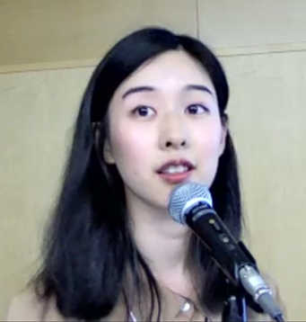

Helmholtz Investigator Group
SpinQUEST
Probing Exotic Quantum Excitations via Spin Transport for Future Technologies
Junior Group Leader: Nan Tang
Dresden High Magnetic Field Laboratory (HLD)
Helmholtz-Zentrum Dresden-Rossendorf (HZDR), Germany
News
- 2027 Jan. SpinQUEST is planned to start at HZDR. We are recruiting PhD students!
Research
Tracing the Journey of Spins Through Quantum Matter
Spin is a fundamental quantum property of electrons and the origin of magnetism. While conventional electronics relies on electric charge to carry information, spintronics explores how electron spins can be used to store and transport information.
Traditionally, spin transport has been studied mainly in conventional magnets, such as ferromagnets, where magnetic moments form an ordered pattern. But what happens in more exotic quantum magnets, where strong interactions and quantum fluctuations give rise to unconventional magnetic states and excitations?
- Can exotic quantum excitations open up new ways of transporting information?
- Can spin transport reveal the underlying topology of quantum materials?
- How does quantum many-body physics shape the way spin information is transported?
In SpinQUEST, we address these questions by investigating spin transport in exotic quantum magnets, including quantum spin liquids. We explore these materials under extreme conditions—magnetic fields up to ~20 T and temperatures down to ~30 mK—where unusual quantum phenomena can emerge. By combining spin transport experiments with complementary thermodynamic measurements, we aim to uncover the hidden physics of quantum magnets and explore new possibilities for future spin-based technologies.
Selected Publications
- "Electrical observation via spin Seebeck effect of fractionalized excitations in a magnetic insulator" arXiv:2606.02501 (2026)
- "Spin–orbital liquid state and liquid–gas metamagnetic transition on a pyrochlore lattice" Nature Physics 19, 92–98 (2023) News & Views: "Melted spin ice", Nature Physics 19, 17–18 (2023) Press releases: ISSP, The University of Tokyo · idw · HZDR
People

Nan Tang
- 2027 Jan –Junior Group Leader, Helmholtz Investigator Group SpinQUEST
- 2022 Oct – 2026 DecPostdoc, Institute of Physics, University of Augsburg
Alexander von Humboldt Fellow - 2021 Oct – 2022 OctPostdoc, Faculty of Science, The University of Tokyo
- 2018 Sept – 2021 SeptPhD, ISSP, The University of Tokyo
Thesis: Spin-orbital quantum dynamics of multipolar spin ice Pr2Zr2O7 - 2016 Sept – 2018 SeptMaster, ISSP, The University of Tokyo
Contact
Nan Tang
nan.tang_@_uni-a.de (remove_)